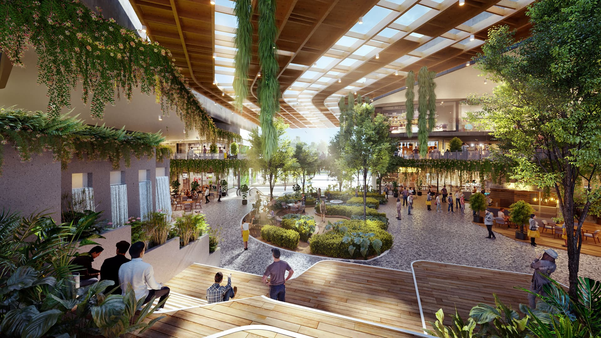

Horizon Mall is bringing a new commercial centre into Horizon Hills, one of the best-known landed townships in Iskandar Puteri. The common question is simple: will a new mall push up Horizon Hills property prices?
My short answer is: not automatically. A mall does not make every house more valuable overnight. The real question is whether it makes daily life better, brings more people into the township and gives more buyers a reason to choose Horizon Hills.
Watch my on-site video: Horizon Hills new mall and what it may mean for the property market.
Where Is Horizon Mall?
Horizon Mall is located at No. 1, Jalan Eka 3, Horizon Hills, 79100 Iskandar Puteri. It sits near the Horizon Hills Golf & Country Club and across from Invictus International School.
This location matters because the mall is not standing alone. It is surrounded by existing homes, a golf club, a school and nearby townships. The official plan is for a neighbourhood lifestyle mall that serves daily needs such as groceries, food, fitness, healthcare and family activities.
Gamuda Land describes it as a 150,000 sq ft mall with a nature-based, open-air design. The official Horizon Mall directory lists a mix of grocery, food, fitness, beauty, family entertainment and daily-service tenants.

Horizon Square – The New Commercial Component
Horizon Square is the shop-office area next to the new mall. It is a separate commercial component, but both developments work together.
The mall can bring regular visitors, while the shop offices can support restaurants, services, offices and other businesses. Gamuda Land has stated that Horizon Square has 78 retail and commercial lots. This gives Horizon Hills a larger commercial centre than the township had before.
From a property point of view, I would watch the tenant mix and the number of shops that stay active after the first opening period. A busy commercial area is useful. A large number of empty shops is not.
What Was Missing in Horizon Hills Before?
Horizon Hills was already known for landed homes, security, green surroundings and the golf course. However, residents still had to drive outside the township for many daily needs.
Nearby areas such as Bukit Indah and Eco Botanic offered more food, groceries and retail choices. This did not make Horizon Hills a bad place to live, but it was a small weakness when buyers compared convenience.
Horizon Mall and Horizon Square may fill this gap. If residents can buy groceries, eat, exercise or use basic services near home, the township becomes easier to live in.
Will Horizon Mall Increase Horizon Hills Property Prices?
I would not tell a buyer that prices will rise simply because a mall has opened. Property prices are affected by many things: the wider economy, loan costs, the supply of homes, the condition of each house and the number of serious buyers.
The possible effect is a step-by-step process:
- New commercial choices improve daily convenience.
- More families become willing to live in Horizon Hills.
- Housing demand becomes stronger.
- Good homes may sell more easily.
- Over time, stronger demand may support property prices.
The important word is may. We need to see how well the mall and shop offices perform after opening. We also need to see whether more homebuyers choose Horizon Hills because of them.
For anyone studying Iskandar Puteri property prices, commercial development is one useful signal, but it should never be the only reason to buy.
The Bigger Impact May Be Property Liquidity
In my view, the first change may appear in property liquidity, not in a sudden jump in price.
Liquidity simply means how easy it is to find a buyer when an owner wants to sell. A home can have a high asking price, but that does not mean it will sell quickly.
If Horizon Mall makes the township more attractive to families, more buyers may add Horizon Hills to their shortlist. A larger buyer pool can help well-priced and well-kept homes sell faster.
This is especially important in a landed market. Two houses in the same precinct may have different land sizes, facing, renovation quality and asking prices. The mall may improve interest in the township, but buyers will still compare each unit carefully.
You can also read my guide on Horizon Hills resale homes versus new launches for a wider view of the buying decision.
Possible Downsides – Traffic, Parking & Congestion
Commercial activity is not always positive for every resident. More visitors may also mean more traffic, parking pressure and noise, especially during weekends, school hours and busy meal times.
Horizon Hills has always appealed to buyers who like a quiet, green and low-density environment. If the commercial centre becomes too crowded, some residents may feel that part of this character has changed.
The impact will not be equal across the whole township. Homes close to the mall may enjoy easier access, but they may also feel more traffic. Homes deeper inside the residential precincts may keep more privacy, although residents will need a longer drive to the shops.
This is why I would not say that the “nearest house” is always the best house. The right distance depends on whether a buyer values convenience or peace more.
My View on the Future of Horizon Hills
I see Horizon Mall and Horizon Square as useful missing pieces in an already mature township. Horizon Hills does not need a mall to create its identity. It already has a recognised name, an established community, guarded residential precincts and a golf lifestyle.
The new commercial area can make that lifestyle more complete. However, the real result will depend on how many shops open, how many remain active, how traffic is managed and whether residents truly use the space.
For buyers, I would still start with the house itself: precinct, land size, layout, condition, facing, tenure and price. The mall is an added advantage, not a reason to ignore the basics.
If you are comparing Horizon Hills with other areas, see my guide to Horizon Hills, Eco Botanic and East Ledang, or start with the wider Iskandar Puteri landed property guide.
Frequently Asked Questions
Where is Horizon Mall?
Horizon Mall is at No. 1, Jalan Eka 3, Horizon Hills, 79100 Iskandar Puteri, Johor. It is close to the golf club and opposite Invictus International School.
Is Horizon Mall inside Horizon Hills?
Yes. Horizon Mall is part of the wider Horizon Hills township in Iskandar Puteri.
Will Horizon Mall increase Horizon Hills property prices?
Not automatically. It may support prices if it improves convenience, attracts more residents and creates stronger housing demand. The exact home, asking price and wider market still matter.
Is Horizon Hills a good place to live?
It may suit families and buyers who value a guarded landed community, green surroundings, golf facilities and access to Iskandar Puteri. Buyers should also check their daily route, budget and preferred precinct.
What types of properties are available in Horizon Hills?
Horizon Hills has link houses, cluster homes, semi-detached houses, bungalows and some high-rise or villa-style products. Prices vary by precinct, size, tenure, facing and condition.